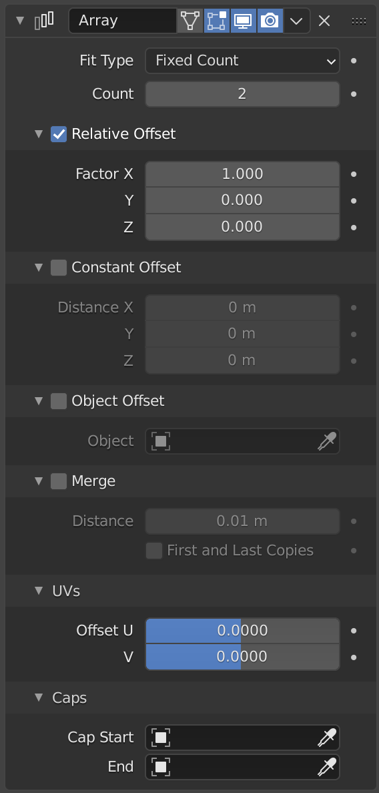

Lesson 8: Array modifier
What Array does
The Array modifier makes copies of an object and places them in a row. You change one number, and every copy updates. Fences, steps, teeth, and tiles are all arrays.

Image: Blender Manual by the Blender Documentation Team, licensed under CC BY-SA 4.0. Shared unchanged.
Steps
- Tool Click a cube to select it. If you don't have one, add a cube with Shift + A, then Mesh > Cube. menu path unverified in 5.2.1
- In the Properties panel, click the blue wrench tab. Click Add Modifier, then Generate > Array.
- Check Two cubes sit side by side, touching. Count shows 2 and Factor X shows 1.000.
- Mouse Double-click the Count box, type 5, and press Enter. You now have five cubes.
- Mouse Double-click Factor X, type 1.2, and press Enter. The copies now have a gap between them.
- Check Five blocks in a row with even gaps.
- Key When you're happy with the row, hover over the Array panel and press Ctrl + A to apply it. This makes the copies permanent. Ctrl+A on the modifier is from the manual; confirm on your Mac
Why 1.2 and not 1.0: Factor X is measured in multiples of the cube's own width. 1.0 means touching, and 1.2 leaves a gap about one-fifth of the block's width.
Project: block row
A row of five blocks with even gaps, like a fence or a set of steps. Save as block-row.blend.